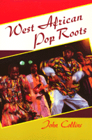

<body bgcolor="#FFFFFF" text="#000000" link="#0000FF" vlink="#CC0000" alink="#CC0000"><center><hr width="350" size="1" align="center" noshade>"The nearest thing we have in the twentieth century to a global folk music"<hr width="350" size="1" align="center" noshade><p><a href="https://cdcshoppingcart.uchicago.edu/Cart/ChicagoBook.aspx?ISBN=9780877227939&&PRESS=temple" target="_top">Buy this book!</a> | <a href="https://cdcshoppingcart.uchicago.edu/Cart/Cart.aspx?PRESS=temple" target="_top">View Cart</a> | <a href="https://cdcshoppingcart.uchicago.edu/Cart/Cart.aspx?PRESS=temple" target="_top">Check Out</a></p><p></p></center><!--none//--><h1>West African Pop Roots</h1>
<h3>John Collins</h3>
<P>cloth 0-87722-793-4 $74.50, Jun 92, <FONT COLOR=#990033>Out of Stock Unavailable</FONT>
<br>paper 0-87722-916-3 $26.95, May 92, <FONT COLOR=#990033>Out of Stock Unavailable</FONT>
<br>Electronic Book 1-43990-497-9 $28.95 <FONT COLOR=#990033>Out of Stock Unavailable</FONT>
<BR> 382 pp
6x9
</P><BLOCKQUOTE><I>"[A]n important resource for anyone interested in the historical development of popular music.... Collins brings to light the contexts, the sources, the crossovers and the evolution of the music in a highly readable way. This is...a book full of life and unique 'insider' insight into African society and music on all levels."</I>
<br>&#151<b><I>Popular Music</I></b><I></I></BLOCKQUOTE>
<p>Having spent more than twenty years as a performer, manager, and producer of African music, John Collins brings an insider's perspective and a personal passion to this account of popular music in West Africa. He explores the roots of the various styles and genres and the "feedback" of black music adapted to the New World and returning to Africa to reinfluence its origins. Collins celebrates the personalities and sounds of today's music, its influence on an international audience, the African music business, and the cross-fertilization between African music and that of other cultures. Interspersed with his rich descriptions and historical narratives are colorful biographical sketches of important African musicians along with a wealth of rare photographs of individuals and bands.
<p>With the intention of exposing "the inner driving forces of popular music in Africa," Collins delves into the history of African music, traces its evolution throughout the twentieth century, and explores the current "world beat" explosion. He demonstrates that the enormous energy generated by African music is in part a result of its polyrhytmic nature and rhythmic spacing, "the hot sounds and the cool space." He describes the complexities of African rhythms: the cross-beats, the inside rhythm, the varying tempo, the positive and negative sound, and the rhythmic dialogue. "African music," Collins observes, "is a gestalt of opposites that unifies the up and down-beat, head and feet, the audience and performer, into the communion of the beat.... There is no separation, only universal 'togetherness.'"
<p><I>West African Pop Roots</I> treats the significant personalities and inside stories of many of its greatest stars, including Manu Dibango with Soul Makossa, E.T. Mensah, Victor Uwaifo, Fela, Youssou N'Dour, and Sonny Okosun, among others. Collins describes the global research for the African roots of pop, which has attracted such Western performers as Ginger Baker, Paul McCartney, Mick Fleetwood, Peter Gabriel, Paul Simon, David Byrne, and many others. The author describes Africa's world-wide influence on music and dance as "the nearest thing we have in the twentieth century to a global folk music."
<BR>&nbsp;<h2>Reviews</h2>
<p><I>"A tremendous resource, not only for those outside of Africa who are trying to understand the source of Afro pop but also for Africans themselves...."</I>
<br>&#151<b>George Collinet</b>, "Afro Pop Worldwide," National Public Radio
<BR>&nbsp;<h2>Contents</h2><P>
<p>Introduction
<p><b>Part I: Roots</b>
<br>1. Traditional Cool and Hot Rhythms: African Music in the Space Age
<br>2. First Fusions&#151Orchestras and Brass-Bands: E.T. Mensah, the King of Highlife, and King Bruce
<br>3. Palm-Wine and Guitars: "Sam" (Kwarne Asare), Kwaa Mensah, and E.K. Nyarne
<br>4. The Man Who Made a "Traditional" Music Called Kpanlogo
<p><b>Part II: Feedback</b>
<br>5. Ragtime to Rumba
<br>6. Jazz Comes Home to Africa
<br>7. Soul to Soul
<p><b>Part III: Today's Sounds and Personalities</b>
<br>8. Fela and the Afro-Beat Revolution
<br>9. The Juju Boom
<br>10. Osibisa’s Criss-Cross Rhythms
<br>11. Afro-Rock Catches On
<br>12. Afro-Disco
<br>13. Victor Uwaifo, the Guitar Boy
<br>14. The Drums of Kofi Ayivor
<br>15. The Afro-Reggae of Sonny Okosun and Alpha Blondy
<br>16. Guitar-Band Explosion: Highlife, Maringa, and Makossa
<br>17. "F" Promotions: Ghana's Melting Pot
<br>18. Life on the Road: Modern African Minstrels, the Jaguar Jokers
<br>19. The African-French Connection
<br>20. Pushed Out by Apartheid
<br>21. The Liberian Pop Scene
<br>22. Francophone West Africa and the Jali Experience &#150 Flemming Harrey
<p><b>Part IV: Music Business</b>
<br>23. The African Recording Industry
<br>24. African Music Unions
<br>25. Running a Band and a Music Studio in Ghana
<p><b>Part V: Cross-Overs</b>
<br>26. Africa Goes West
<br>27. The Original African Cross-Overs: Ghanaba and Kwesi Asave
<br>28. Roots, Rasta, Reggae: Stepping-stones back to Africa
<br>29. Africa and New Wave
<br>30. Black and White
<p>About the Author
<br>Acknowledgments
<br>Index
</P><BR>&nbsp;<H2>About the Author(s)</H2>
<P><b>John Collins</b> is manager of the Bokoor Recording Studio (Ghana), acting Chairman of the Bokoor African Popular Music Archives Foundation, and is on the Ghanaian National Folklore-Copyright Administration Board. The author of several books and numerous articles about African music, he is a doctoral candidate at State University of New York at Buffalo.</P>
<BR><H2>Subject Categories</H2>
<p><A HREF="/tempress/general.html" TARGET="_top">General Interest</a>
<BR><A HREF="/tempress/music.html" TARGET="_top">Music and Dance</a>
<BR><A HREF="/tempress/african_studies.html" TARGET="_top">African Studies</a>
</p>
<p align="center"><a href="https://cdcshoppingcart.uchicago.edu/Cart/ChicagoBook.aspx?ISBN=9780877227939&&PRESS=temple" target="_top">Buy this book!</a> | <a href="https://cdcshoppingcart.uchicago.edu/Cart/Cart.aspx?PRESS=temple" target="_top">View Cart</a> | <a href="https://cdcshoppingcart.uchicago.edu/Cart/Cart.aspx?PRESS=temple" target="_top">Check Out</a></p><p><font face="Arial" size="1"><a href="copyright.html" onMouseOver="window.status='Web Copyright Policy';return true;" onMouseOut="window.status=''" title="Web Copyright Policy">&copy;</a> 2015 <a href="http://www.temple.edu" target="new" onMouseOver="window.status='Link to Temple University home page';return true;" onMouseOut="window.status=''" title="Link to Temple University home page">Temple University</a>. All Rights Reserved. http://www.temple.edu/tempress/titles/758_reg.html</font></p>